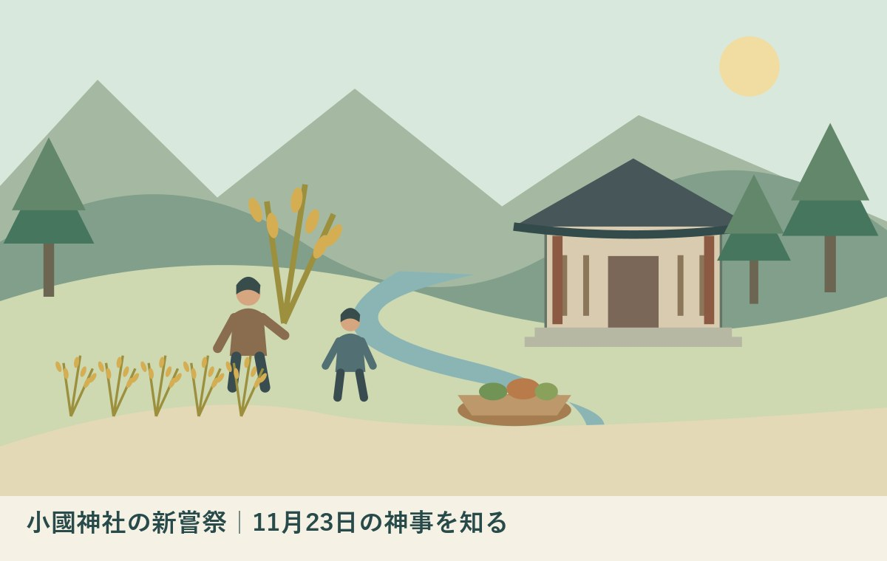

小國神社の新嘗祭｜11月23日の神事を知る
／ ／ 社寺・文化財・建築

Q：小國神社の新嘗祭は、いつ、何をする神事ですか？
A：小國神社の年間祭典表は、新嘗祭を11月23日の収穫と繁栄に感謝する神事と案内しています。恒例日程と、その年の参列・撮影条件は別です。2026年の個別条件は未確認のため、まず公式の年間祭典表を読み、訪問前に必要な条件だけを確認してください。
新嘗祭は、収穫と繁栄への感謝を伝える神事
小國神社の新嘗祭は、年間祭典表で11月23日に記載されている神事です。秋の参拝を考えるとき、紅葉や買い物の予定だけでなく、その日に神社が何を営んでいるかを知る入口になります。この記事は、2026年10月21日に確認した公式情報を基にしています。
稲や野菜を育てる人、境内を整える人、祭典の準備をする人。その仕事があるから、訪ねる側は秋の一日を過ごせます。私は大石浩之（磐田市／不動産業）です。森町の外から関わる者として、楽しむ予定を立てる前に、支える側の時間にも目を向けたいと思います。
小國神社公式日本語サイトの「祭典・神事」は、新嘗祭を収穫と繁栄に感謝する祭りと説明しています。2月の祈年祭と対をなすことも記されています。春の祈りと秋の感謝を、一年の仕事の両側に置いて読むと、日付だけでは見えなかったつながりが見えてきます。
私は、神事を知ることと、見学できると決めることを分けます。年間祭典表に日が載っているだけで、2026年の参列方法や撮影条件まで確定したとは読めません。意味を調べる段階と、当日の行動を決める段階を分ける。それが、この記事の結論です。
森町の社寺文化を、暮らしの仕事から見る
森町公式の「文化財」ページには、小國神社、天宮神社、山名神社に伝わる舞楽が掲載されています。新嘗祭と舞楽は同じ神事ではありません。町の社寺に受け継がれる文化を、一つの催しの名前だけで捉えないための背景資料として読むことができます。
同ページは、2001年の町の統計資料を基にした指定文化財の表を含みます。閲覧できるページの更新日だけで、掲載されている全項目が2026年の調査結果になったとは判断できません。過去から伝わる指定の記録と、現在の見学条件は別に確かめる必要があります。
森町公式「図説森町史」の神社建築の章は、小國神社本殿の形式を大社造として紹介しています。神事が行われる場所には、建物として見守る対象もあります。祭典の日だからといって、普段入れない場所へ入れるという説明ではありません。
私は、社寺を訪ねる価値は、見た数だけでは測れないと考えます。建物が残り、掃除が続き、年中行事が営まれること自体に仕事があります。参拝者が全部の事情を知るのは難しくても、管理する方の案内を優先することは、その場でできます。
年間祭典表で分かること、分からないこと
小國神社の公式英語サイトも、新嘗祭を11月23日と記載しています。日本語の年間祭典表と、日付が一致しています。二つのページを読むときは、翻訳の表現を追うより、神事名、日付、その説明がどこまで一致するかを押さえると整理できます。
日本語の祭典表には、新嘗祭の日に近隣農家の米や野菜類の品評会、即売会があるという恒例の説明もあります。ただし、同じ欄から2026年の出店者、開催時間、販売品目、天候による変更は確認できません。恒例の紹介を、その年の販売告知に置き換えないでください。
私は、収穫への感謝を中心に据えるなら、買える品物を先に約束しない書き方がよいと考えます。品評会などの説明は神事と農の関係を知る材料になります。買い物を主目的にするご家族は、その年の個別案内が出ているかを別に確かめる順序になります。
年間祭典表のページ自体には、今回確認した範囲で公表日や更新日の表示を見つけられませんでした。この記事の確認日は2026年10月21日です。資料の公開日が不明なことと、こちらが本文を読んだ日を混ぜずに記録しておきます。
良い点｜春と秋をつないで神事を理解できる
小國神社の年間祭典表の良い点は、新嘗祭と祈年祭の関係を短い説明で示していることです。神事名を暗記するだけでなく、春に願い、秋に感謝するという一年の流れを知る手掛かりになります。収穫を支えた時間へ目を向ける入口があります。
私は、農作業の現場を見ていない人にも、その一年を想像する余地があることを評価します。米や野菜が店に並ぶ前には、土地や水、作業、天候との付き合いがあります。神事の解説を、地域の仕事に関心を持つきっかけにできる点は、観光の予定表だけにはない良さです。
年間祭典表は、別の月の行事も同じ場所で確認できます。一度の訪問を町全体の理解と思い込まず、季節によって神社の営みが変わると知ることができます。秋分の日の遙拝式を扱った記事と併せると、異なる神事を混同せずに読めます。
私は、地域の文化を一日で分かったことにしなくてよいと思います。今回は新嘗祭の意味だけを知る。次の機会には別の行事を読む。その程度の小さな関心でも、当日の案内を落ち着いて受け止める下地になります。知らないことを残して訪ねるのは、失礼なことではありません。
注文したい点｜恒例の説明と当年の条件をつなぎたい
年間祭典表だけでは、2026年の新嘗祭について、一般参列の可否、開始時刻、申込み、撮影の範囲を確定できません。神事の存在を知る資料としては役立ちますが、ご家族の移動を決める資料としては、確認を足す必要があります。
私は、毎年の説明からその年の案内へ進める道筋があると、訪ねる側にも受ける側にも負担が少ないと考えます。長い案内を求めるのではありません。変更点の有無と問い合わせ先が分かるだけでも、同じ質問が重なることを減らせると期待します。
ただ、私には神社側の案内作成に使える人員や時間は分かりません。新しい告知を増やせばよい、と簡単には言い切れない迷いがあります。訪ねる側が、すでに公式ページに書かれている事項を読んでから質問することも、同時にできる工夫です。
確認したいことを四つも五つも広げず、「一般参列を希望するが可能か」など、予定を左右する問いを一つ先に決めます。回答を受けたら、誰が何を聞いたかを家族で共有します。別の家族が同じ内容を再度問い合わせる手間も防げます。
担い手の時間と、家族の移動を一緒に考える
新嘗祭を訪問予定に入れる場合、神事の意味を知る作業と、家族が移動できる条件を調べる作業は別です。小國神社の所在地は森町一宮3956-1です。出発地からの所要時間や交通条件は、各家庭の予定に合わせて確認する必要があります。
私は、年配のご家族と一緒なら「何時までに着くか」だけでなく、「途中で予定を変えられるか」を考えたいと思います。休憩や歩く距離への不安があれば、それを先に家族内で話します。現地で管理する方へ、急に対応を求めずに済む準備になります。
同じ神社でも、神事、祈祷の受付、施設見学は条件が異なる場合があります。七五三の受付を整理した記事の条件を、新嘗祭へそのまま当てはめることはできません。行事名と確認先をそろえて読む必要があります。
予定表には、参拝を終えた後の立寄り先を詰め込みすぎない方がよいと私は考えます。神事の進行や家族の体調で予定が変わっても、同行者の間で焦りを増やさないためです。途中で切り上げる選択も、出発前に共有しておくと判断しやすくなります。
対案・結論｜今日は祭典表を一度読む
新嘗祭について今日できる小さな一歩は、小國神社公式の年間祭典表を開き、11月23日の欄を読むことです。日付と神事名、祈年祭との関係をメモします。2026年の個別条件を確認できたかどうかは、別の欄に残してください。
私は、最初のメモを「分かったこと」「確認が残ること」の二段に分けることを提案します。前者は恒例日程と意味。後者は参列の条件や時刻です。空欄をすぐ想像で埋めない方が、次に何を聞けばよいかが明瞭になります。
参列を希望しないご家族なら、神事の進行時刻まで調べる必要はありません。地域の秋を知る読書として、公式説明を読むだけでも一区切りにできます。行くかどうかを決める前に、情報収集を大きな仕事にしないことも、段取りの一つです。
神事を訪ねる場合は、参列、写真、移動について必要な確認を済ませます。回答が得られていない条件は、得られたかのように同行者へ伝えません。できることの範囲をそろえてから出発する。それだけで、現地での思い込みを減らせます。
家族に残すのは、行事名と確認日のメモ
家族で共有する新嘗祭の訪問メモには、行事名、所在地、公式ページのURL、確認日を残します。問い合わせた場合は、その日と回答内容も分けます。神事名が似ていても別の行事の回答を混ぜないため、ページの見出しも一緒に記すと整理できます。
スクリーンショットだけを共有すると、いつ見た情報かが分からなくなることがあります。私は、画像に添えて「2026年10月21日確認、恒例祭典表」と一行書く方法を提案します。個別告知を後から見つけたら、古い記録を消さず、新しい確認を追記します。
社寺に近い家や土地を引き継ぐご家族も、年間行事を知ることはできます。ただし、近隣に不動産があることだけで、祭典への役割や負担が決まるとは限りません。地域との関わりは、家族が知っている事実と、これから確認する事項を分けて引き継ぎたいところです。
福神像頒布式の意味を扱った記事も、行事名と日付を区別して読むための関連記事です。神社を一括りにした案内ではなく、その行事で何が行われるかを一件ずつ確かめる姿勢を、今回も共通にしています。
大石の視点｜収穫の向こうに、続ける仕事がある
私は、小國神社の新嘗祭を知るとき、神事だけを地域の暮らしから切り離さない方がよいと考えます。収穫への感謝を語るなら、土地を使い続ける仕事や、建物と参道を保つ仕事にも関心を向けたい。そのつながりが、森町の文化を読む厚みになると思います。
私は不動産業の立場から、家や土地を次へ渡す際に、物の一覧だけでは足りないと考えています。誰に確認すればよいか、どの記録を見ればよいか。その入口が分かることも、引継ぎの材料です。これは新嘗祭の運営を経験した実話ではなく、私の判断の置き方です。
地域の担い手へ何かを頼む前に、自分の側で読める案内を読む。私は、その小さな順序を大切にします。神事を支える人の負担を全部把握できなくても、分かる範囲で準備することはできます。見せてもらう側の都合だけで、一日の進行を考えないようにしたいのです。
秋の予定は、今日すべて決めなくて構いません。年間祭典表の一行を読み、分かったことと未確認のことを分ける。その紙を家族と共有できれば、次の判断に使える材料が一つ増えます。森町を訪ねる準備は、その一歩からでも始められます。
訪問前の確認は、同行する人の疑問から絞る
新嘗祭への訪問準備では、家族が何をしたいのかを先に確認します。神事の意味を知りたいのか、一般参列を希望するのか、通常の参拝を考えるのかで、必要な情報は変わります。希望が曖昧なままでは、問い合わせる側も答える側も、どこまで説明すればよいかが定まりません。
私は、同行者の希望を一人ずつ聞いてから、代表者が質問をまとめる方法を提案します。写真を撮りたい人と、短い滞在で帰りたい人の希望を、同じ予定で満たせるとは限りません。神社へ確認する前に家族の中で整理できることを済ませると、外へ頼む仕事を減らせます。
公式説明を家族へ送る際は、恒例日程であることも伝えます。たとえば「11月23日の欄に新嘗祭の説明あり。2026年の参列条件は未確認」と添えます。予定が決まったように受け取られる表現を避けるためです。出発直前にも、個別告知や変更の案内を確かめてください。
訪問を見送る場合でも、調べた記録は残せます。次の年に行くときは、古いメモを出発点にしながら、当年の案内を読み直します。私は、予定が合わなかったことを準備の失敗とは考えません。神事の意味を知り、次に確認する先が分かることも、家族に残る成果だと思います。
FAQ｜小國神社の新嘗祭を知るために
2026年は誰でも参列できますか？
小國神社の年間祭典表には新嘗祭を11月23日と記載しています。ただし、2026年の一般参列の可否、申込み、開始時刻は今回確認した本文では確定できません。恒例日程だけで自由に参列できると判断せず、参列を希望する場合は公式の個別案内と神社の回答を確認してください。
祈年祭とは何が違いますか？
小國神社の公式説明では、新嘗祭は収穫と繁栄に感謝し、2月の祈年祭と対をなす神事です。新嘗祭は11月23日、公式英語の年間祭典表では祈年祭は2月18日と記載されています。春と秋のつながりを知る入口になりますが、具体的な参列方法は行事ごとに確認が必要です。
神事を見るために何を確認しますか？
新嘗祭を見学・参列の目的で訪ねるなら、まず一般の人が入れる範囲、時刻、申込みの要否を確認します。撮影を考える場合は許可される条件も別に確認してください。家族内で代表して問い合わせる人を決め、確認日と回答を共有すると、同じ質問を何度も重ねずに済みます。
公式情報源
2026年10月確認（本文・リンク確認日：2026年10月21日）
- 小國神社：祭典・神事（恒例祭典表）（2026年10月確認）
- 小國神社公式英語サイト：年間の神事と習慣（2026年10月確認）
- 森町：文化財（過去の指定記録を含む）（2026年10月確認）
- 森町：図説森町史・神社建築（2026年10月確認）
制度、案内、数値、受付条件は変わることがあります。行動前に公式の最新情報を確認してください。個別の文化財、建物、契約、税務等の判断は、所有者・管理者、担当窓口、適切な専門家へ相談してください。